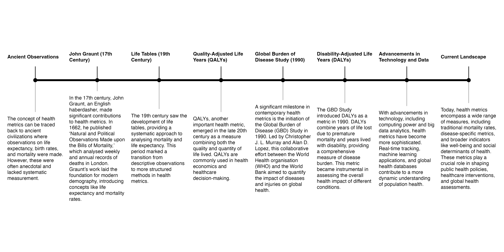
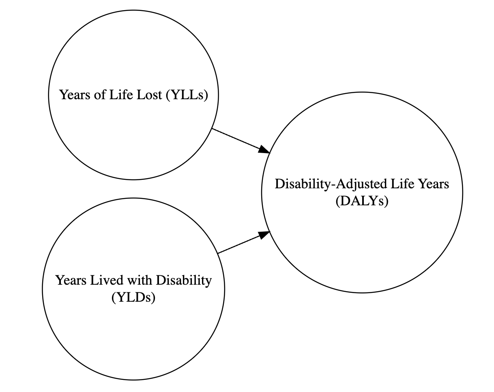

| Metric | Purpose | Focus | Usage | Calculation |
|---|---|---|---|---|
| QALY (Quality-Adjusted Life Year) | Measures health benefits of interventions by combining quantity and quality of life gained | Health gains from interventions | Used in cost-effectiveness studies, healthcare resource allocation, and insurance | Calculated by adjusting life years gained for quality of life (e.g., 1 year at half quality = 0.5 QALY) |
| DALY (Disability-Adjusted Life Year) | Measures burden of disease by capturing premature death and disability impact | Health loss due to disease and disability | Used in public health to understand and compare disease burden globally | Calculated by summing years of life lost (YLL) and years lived with disability (YLD) |
| HALY (Health-Adjusted Life Year) | General measure combining health quantity and quality; similar to QALY but less common | Health gains or losses from interventions or disease impact | Used similarly to QALY, though less frequently in decision-making | Calculated by adjusting life years for health quality; similar to QALY |
| HALE (Healthy Life Expectancy) | Estimates life expectancy in ‘healthy’ years, adjusting for disability and illness | Overall healthy life expectancy at a population level | Primarily used in population health and public health reports for health expectancy | Calculated by adjusting total life expectancy based on age-specific disability prevalence |
| HLY (Health Life Years) | Measures the additional healthy years expected, often from a specific age like 65 | Healthy life expectancy focused on ageing populations | Used in geriatric health assessments and interventions for ageing populations | Typically calculated by estimating additional years of good health beyond a baseline age |
| WAHE (Well-being Adjusted Health Expectancy) | Incorporates both physical and subjective well-being for life expectancy in ‘full health’ | Overall well-being and mental health as well as physical health | Applicable for holistic health assessments, incorporating quality of life and mental wellness | Calculated by weighting health states to reflect impact on well-being and quality of life |
2 Introduction to Health Metrics
“The concept of health also has highly subjective connotations, precisely because it is conditioned by the personal view of happiness.” René Dubos1
Health metrics are key variables to understanding the state of health of a population. In this first section of the book we’ll explore the history of these metrics, how to calculate them, and how to account for their variation due to causes and risks. We will examine the components of these metrics and the challenges in providing standardised values for global comparison. Additionally, in the following sections, we will learn how to build a model, evaluate the effect of infectious disease spread on health metrics, and how it impacts the overall health status of a population.
2.1 The History of Health Metrics
The history of health metrics is a fascinating journey that spans centuries, evolving from rudimentary observations to sophisticated statistical methods, as illustrated by Figure 2.1.
One of the earliest forms of health metrics can be traced back to the work of John Graunt, an Englishman, in the 17th century.2 In 1662, Graunt published a landmark work titled “Natural and Political Observations Made upon the Bills of Mortality.” Graunt, defined as the father of human demography, was largely self-educated, and his interest in mortality data was driven by the Bills of Mortality, which were weekly and annual records of deaths in London, and provided information on the number of births and deaths in the city. Graunt meticulously analysed this mortality data and produced tables that presented various patterns and trends. His work laid the foundation for modern demography and statistical analysis. Among his notable contributions were the concepts of life expectancy and mortality rates. One of Graunt’s key observations was the consistent pattern of higher mortality among infants and young children. He noted the difference in life expectancy between males and females and provided insights into factors influencing mortality, such as epidemics and seasons.
Over time, advancements in mathematics, medicine, and statistics led to the development of more sophisticated health metrics. The 19th century saw the emergence of life tables, which provided a systematic way to analyse mortality and life expectancy.

More specifically, Mary Dempsey in 1940s wrote an article3 for the National Tuberculosis Association about the concept of Years of Life Lost (YLLs), assessing time-lost as a metric for health for the first time. She was then followed by other more advanced improvements spanning all throughout the rest of the century.
“The quality of life depends also on the state of”public health”-namely on factors that affect the biological welfare of the community as a whole.”4
The 20th century marked significant advancements in epidemiology, driving the expansion and refinement of health metrics. This period saw the widespread adoption of life tables and the modification of expected survival time to incorporate weighted metrics, such as disability-adjusted life years (DALYs). These developments enabled more comprehensive assessments of population health by accounting for both mortality and the quality of life, laying the foundation for modern health evaluation tools.
The term Summary Measures of Population Health (SMPH)5 was established in the field, originating from the need to encapsulate both fatal and non-fatal health outcomes into a single, comprehensive measure, representing a significant evolution in health metrics. Used for various purposes, the SMPH compares the health of populations and includes the contributions of different diseases, injuries and risk factors to the total disease burden in a population. SMPH, also referred to as a composite indicator,6 is divided into two broad families: health expectancies and health gaps.
Health expectancies are summary measures that combine information on mortality and morbidity to represent the average number of years that an individual can expect to live in good health. Such as healthy life expectancy (HALE) and the quality adjusted life expectancy (QALE) using health-related quality of life.
Health gaps, on the other hand, represent the difference between the current health status of a population and an ideal health situation, providing a measure of the potential for improvement in health outcomes. Divided into the disability adjusted life years (DALYs)7 in the global burden of disease (GBD) study and the quality adjusted life years (QALYs) used as the outcome index of the cost-utility analysis.
In the contemporary era, the integration of computing power and big data has further transformed health metrics. Today, we have complex models, machine learning algorithms, and global health databases that allow for real-time tracking of diseases and health outcomes.
John Graunt’s work may have been modest in its origins, but it laid the groundwork for a scientific approach to understanding population health. From Graunt’s early analysis of the Bills of Mortality8 to the development of today’s advanced health metrics, this journey reflects the ongoing effort to measure and understand the complexities of human health and disease.
2.1.1 Quality-Adjusted Life Years (QALYs)
The concept of Quality-Adjusted Life Years (QALYs) emerged in the late 1970s, originating from the idea of combining both the quantity and quality of life by Joseph S. Pliskin, then it became a widely used metric for evaluating the cost-effectiveness of healthcare interventions.9 One QALY corresponds to one year in perfect health, it ranges from 1 (perfect health) to 0 (dead). However, this metric, used in various sectors such as health insurance, is somewhat criticised due to its lack of addressing disparities among individuals. It might result in discrimination against individuals with specific medical conditions or disabilities.
A controversial outcome emerged after 25 years of research and studies, raising concerns about the metric’s validity and inclusiveness. Started in the early 1989s, to step in the 2010 with the European Commission10 which started the largest-ever study specifically dedicated to testing the assumptions of the QALY,11 ending in 2013 with the recommended “not using QALYs in healthcare decision making”, arguing that patients with disabilities are valued less under a QALY-based system than individuals with no disabilities. This result has been further criticised and remains a topic of debate.
“Thus, medicine cannot by itself determine the quality of life. It can only help people to achieve the state of health that enables them to cultivate the art of life-but in their own way. This implies the ability to enjoy the fundamental satisfactions of the biological joie de vivre. It also implies the ability for each person to do what he wants to do and become what he wants to become, according to human values that transcend medical judgement” R.Dubos12
Used in health policy to measure the value of medical interventions by balancing both the quantity and quality of life added, QALYs help decision-makers determine which treatments or programs offer the greatest health benefits relative to their costs. For example, a health policy might prioritise funding for treatments that deliver high QALYs per dollar spent, ensuring resources are allocated to maximise health outcomes across the population. This approach guides decisions in healthcare budgeting, insurance coverage, and prioritising interventions for chronic illnesses, preventive care, or new therapies.
2.1.2 Disability-Adjusted Life Years (DALYs)
In the 1990s, the World Bank financed a study at Harvard University to develop a sustainable index that considered not only the health status but also the identification of the level of disabilities concerned by disparities. This lead to a new way of comparing the overall health and life expectancy of different countries, released along with the Global Burden of Disease Study in 1990;13 a project that involved Christopher J. L. Murray14 and Alan Lopez,15 in collaboration with the World Health organization (WHO). This effort resulted in the development of the Disability-Adjusted Life Years (DALYs),16 a metric that combines years of life lost due to premature death (YLLs) and years lived with disabilities (YLDs).

DALYs are connected with QALYs in that both metrics seek to quantify the impact of health on quality and length of life. However, while QALYs focus on the benefits with and without medical intervention, DALYs measure the overall burden of diseases.
The DALY metric is calculated by summing the years of life lost (YLLs) due to premature death and the years lived with disabilities (YLDs). This metric provides a comprehensive measure of a population’s health status by highlighting both mortality and disability. For example, consider a population with a life expectancy of 80 years. Individuals who die before reaching this age contribute to the YLLs, while those living with disabilities add to the YLDs. The sum of these values gives the total DALYs for the population, which can then be compared globally to assess health status and identify areas needing improvement in facilities, research, or investment.
2.1.3 Health-Adjusted Life Years (HALY)
Health Adjusted Life Years (HALY) is a metric that combines aspects of both DALYs and QALYs to provide a comprehensive measure of health outcomes in a population. HALYs quantify the burden of disease and the overall quality of life experienced by individuals, measuring the number of years of healthy life lived by a population while accounting for both mortality and morbidity. The information about the prevalence of diseases and disabilities, as well as the impact of these conditions on individuals’ quality of life is incorporated in the calculation of HALYs.
HALYs adjust life expectancy levels based on the prevalence of health conditions and their associated disability weights. Disability weights reflect the severity of different health conditions and their impact on daily functioning. By applying these weights to the prevalence of each condition, researchers can estimate the overall burden of disease in terms of years of healthy life lost, similar to the calculation of DALYs. Unlike DALYs, which focus primarily on morbidity and mortality, HALYs incorporate measures of individuals’ quality of life, allowing for a more comprehensive assessment of health outcomes.
2.1.4 Health-Adjusted Life Expectancy (HALE)
Healthy Life Expectancy (HALE)1718 is a measure of overall health and well-being that accounts for both the quantity and quality of life. HALE combines years of life expectancy with the prevalence and severity of disability in a population, providing a more nuanced view of health outcomes than traditional measures of life expectancy.
HALE provides a more comprehensive view of health outcomes than other traditional measures of life expectancy, which only consider the quantity of life. The calculation of HALE typically involves estimating the number of years that an individual can expect to live in good health, taking into account the impact of diseases and injuries on quality of life. This information is then used to estimate the overall health status of a population. It is a useful tool for public health practitioners and policy makers, as it provides a more nuanced view of the health outcomes of a population. This information can help inform public health interventions and prioritise resources, as well as help track changes in health outcomes over time. Additionally, HALE can be used to compare the health outcomes of different populations and identify disparities in health outcomes, which can help inform targeted public health interventions.
Overall, the HALE metric provides a valuable perspective on the overall health and well-being of a population, combining information about both quantity and quality of life to provide a comprehensive view of health outcomes. It adjusts overall life expectancy by the amount of time lived in less than perfect health. This is calculated by subtracting from the life expectancy a figure which is the number of years lived with disability multiplied by a weighting to represent the effect of the disability19.20
2.1.5 Healthy Life Years (HLY)
There is one more health metrics that is worth mentioning, the Healthy Life Years (HLYs) indicator, also known as Disability-Free Life Expectancy (DFLE) or Sullivan’s Index.21 It assesses the number of years an individual can expect to live in good health, free from significant health problems or disabilities. It is a measure of the quality of life-adjusted life expectancy, focusing on the years lived in full health rather than simply the total number of years lived. It specifically focuses on the number of years a person can expect to live without disability, providing valuable insights into overall health and well-being beyond just life expectancy. It takes into account both mortality and morbidity, providing a comprehensive picture of overall health and well-being.
HLYs differs from HALE in that it focuses on the number of additional years a person can expect to live in good health after reaching a certain age, typically 65. This makes HLYs especially relevant for assessing health in ageing populations and evaluating interventions that aim to improve the quality of life for older adults.
For example, an organisation focusing on elder care policy might use HLYs to measure program impact on older adults specifically, while a global health agency might prefer HALE for its applicability to general population health across all ages.
HLY is typically calculated by subtracting the number of years lived with disability from life expectancy at birth. The resulting figure represents the number of years an individual can expect to live in good health, free from significant health-related limitations. Unlike life expectancy, which focuses solely on the length of life, HLY incorporates measures of the quality of life by considering the impact of health conditions on individuals’ ability to engage in daily activities and maintain independence.
2.1.6 Well-being-Adjusted Health Expectancy (WAHE)
Currently, Well-being-Adjusted Health Expectancy (WAHE) is still an emerging metric in health research that combines traditional health indicators with well-being factors to provide a more comprehensive assessment of population health. WAHE is calculated by estimating the number of life years equivalent to full health, taking into account both physical and psychological well-being.
WAHE aims to capture the overall health and well-being of individuals by incorporating measures of physical health, mental health, and social well-being. This metric goes beyond traditional health metrics like life expectancy and disability-adjusted life years to provide a more holistic view of health outcomes by considering factors like happiness, life satisfaction, and social connectedness.
Particularly relevant in the context of global health, WAHE provides a more holistic view of population health that can inform public health policies, healthcare interventions, and resource allocation decisions[22].23.24
2.2 How the Metrics are Used in Global Health
These metrics are used alone or in combination with other health metrics in global health assessments conducted by organisations such as the World Health Organisation (WHO), the European Commission, and the Institute for Health Metrics and Evaluation (IHME). They provide a global perspective and insights into the health status of populations, helping to track progresses towards long-term health objectives over time. The metrics also inform public health policies, healthcare interventions, and resource allocation decisions, helping to prioritise health needs and target interventions effectively.
The investigation into finding updated metrics is a sustained commitment, aiming to develop new measures tailored to the evolving landscape of the health field. Recently, the new Summary Measure of Population Health (SMPH) proposed the Well-being-Adjusted Health Expectancy (WAHE) measure as an estimate of the number of life years equivalent to full health.25 This approach reflects a growing recognition that health metrics should account for physical and clinical indicators and consider psychological and overall well-being.
2.3 Summary
Health metrics play a crucial role in understanding and improving population health. From John Graunt’s early work in the 17th century to today’s sophisticated metrics like DALYs, QALYs, HALYs, HALE, and HLY, these measures have evolved to provide a comprehensive view of health outcomes. They guide public health policies, healthcare interventions, and global health assessments, highlighting areas for improvement and helping to allocate resources effectively. As health metrics continue to evolve, incorporating both traditional and well-being indicators, they will remain essential tools in the quest to quantify and enhance the complexities of human health and disease.
What’s next? In the next chapter we will investigate deeper into how DALYs break down health impacts into two powerful metrics—Years of Life Lost (YLLs) and Years Lived with Disability (YLDs). These calculations not only reveal the total toll of disease but drive critical decisions on where to focus resources and which interventions can most effectively boost population health.
R Dubos, “The State of Health and the Quality of Life.” Western Journal of Medicine 125, no. 1 (July 1976): 8–9, https://www.ncbi.nlm.nih.gov/pmc/articles/PMC1237171/.↩︎
“John Graunt,” January 24, 2024, https://en.wikipedia.org/w/index.php?title=John_Graunt&oldid=1198718407.↩︎
Mary Dempsey, “Decline in Tuberculosis,” American Review of Tuberculosis, April 23, 2019, https://www.atsjournals.org/doi/epdf/10.1164/art.1947.56.2.157?role=tab.↩︎
Dubos, “The State of Health and the Quality of Life.” July 1976.↩︎
Christopher J. L. Murray et al., eds., Summary Measures of Population Health: Concepts, Ethics, Measurement and Applications (World Health Organization, 2002).↩︎
Adnan A. Hyder, Prasanthi Puvanachandra, and Richard H. Morrow, “Measuring the Health of Populations: Explaining Composite Indicators,” Journal of Public Health Research 1, no. 3 (December 2012): 222–28, doi:10.4081/jphr.2012.e35.↩︎
C. J. Murray, “Quantifying the Burden of Disease: The Technical Basis for Disability-Adjusted Life Years.” Bulletin of the World Health Organization 72, no. 3 (1994): 429–45, https://www.ncbi.nlm.nih.gov/pmc/articles/PMC2486718/.↩︎
“John Graunt,” January 24, 2024, https://en.wikipedia.org/w/index.php?title=John_Graunt&oldid=1198718407.↩︎
“Quality-Adjusted Life Year,” December 27, 2023, https://en.wikipedia.org/w/index.php?title=Quality-adjusted_life_year&oldid=1192021016.↩︎
“Echoutcome,” October 8, 2016, https://web.archive.org/web/20161008010513/http://echoutcome.eu/.↩︎
David Holmes, “Report Triggers Quibbles over QALYs, a Staple of Health Metrics,” Nature Medicine 19, no. 3 (March 1, 2013): 248–48, doi:10.1038/nm0313-248.↩︎
R Dubos, “The State of Health and the Quality of Life.” Western Journal of Medicine 125, no. 1 (July 1976): 8–9, https://www.ncbi.nlm.nih.gov/pmc/articles/PMC1237171/.↩︎
C. J. Murray, A. D. Lopez, and D. T. Jamison, “The Global Burden of Disease in 1990: Summary Results, Sensitivity Analysis and Future Directions.” Bulletin of the World Health Organization 72, no. 3 (1994): 495–509, https://www.ncbi.nlm.nih.gov/pmc/articles/PMC2486716/.↩︎
“Christopher J. L. Murray,” January 1, 2024, https://en.wikipedia.org/w/index.php?title=Christopher_J._L._Murray&oldid=1192936044.↩︎
“Alan Lopez,” December 11, 2023, https://en.wikipedia.org/w/index.php?title=Alan_Lopez&oldid=1189335406.↩︎
“Disability-Adjusted Life Year,” December 8, 2023, https://en.wikipedia.org/w/index.php?title=Disability-adjusted_life_year&oldid=1188922629.↩︎
Variations in Terminology: The terms “Health-Adjusted Life Expectancy” (HALE), “Healthy Life Expectancy” (HALE), and other variants are sometimes used interchangeably in this book.↩︎
“Indicator Metadata Registry Details,” n.d., https://www.who.int/data/gho/indicator-metadata-registry/imr-details/158.↩︎
“Healthy Life Expectancy (HALE),” n.d., https://www.who.int/data/gho/data/themes/topics/indicator-groups/indicator-group-details/GHO/healthy-life-expectancy-(hale).↩︎
“Healthy Life Years,” January 26, 2024, https://en.wikipedia.org/w/index.php?title=Healthy_Life_Years&oldid=1199224227.↩︎
“Ipc2021,” n.d., https://ipc2021.popconf.org/abstracts/210817.↩︎
Magdalena Muszyńska-Spielauer and Marc Luy, “Well-Being Adjusted Health Expectancy: A New Summary Measure of Population Health,” European Journal of Population 38, no. 5 (December 2022): 1009–31, doi:10.1007/s10680-022-09628-1.↩︎
Well-Being Adjusted Health Expectancy - a New Summary Measure of Population Health | Population Europe,” n.d., https://population-europe.eu/research/books-and-reports/well-being-adjusted-health-expectancy-new-summary-measure-population.↩︎
Muszyńska-Spielauer and Luy, “Well-Being Adjusted Health Expectancy.”↩︎